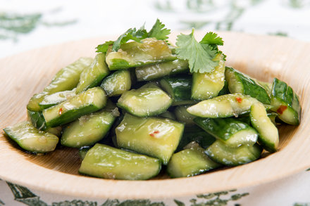

#3 - SWEET AND SOUR CUCUMBER SALAD - 糖醋青瓜
My mother loved to cook and she regularly invited relatives and friends over for dinner party. She often made this dish as one of the many appetizers. It can be prepare one – two days ahead of the time, so no hassle at the day of the party.

INGREDIENTS:
- 2 Cucumber (12 inches long each)
- ½ Red bell pepper
- 3 TBSP White vinegar
- 3 TBSP Sugar
- 1 TBSP Sichuan peppercorn
- 2 cloves Garlic
- ½ tsp salt
Directions:
- Wash cucumber, cut into 1/2 lengthwise and remove the seeds.
- Cut into 2-inch-long sections and each section into 3 thin strip.
- Add salt in and marinate for 2 hours.
- Drain and squeeze the cucumber to get rid of excess water.
- Toast the Sichuan peppercorn in a frying pan on low heat until aromatic.
- Slice the red bell pepper into the approximate size of the cucumber. Slice the garlic into small pieces.
- Put all ingredients into a glass jar and mix well. Refrigerate for at least 1 day before serving.
- Pick out peppercorns before serving.
(Serves 1 person)